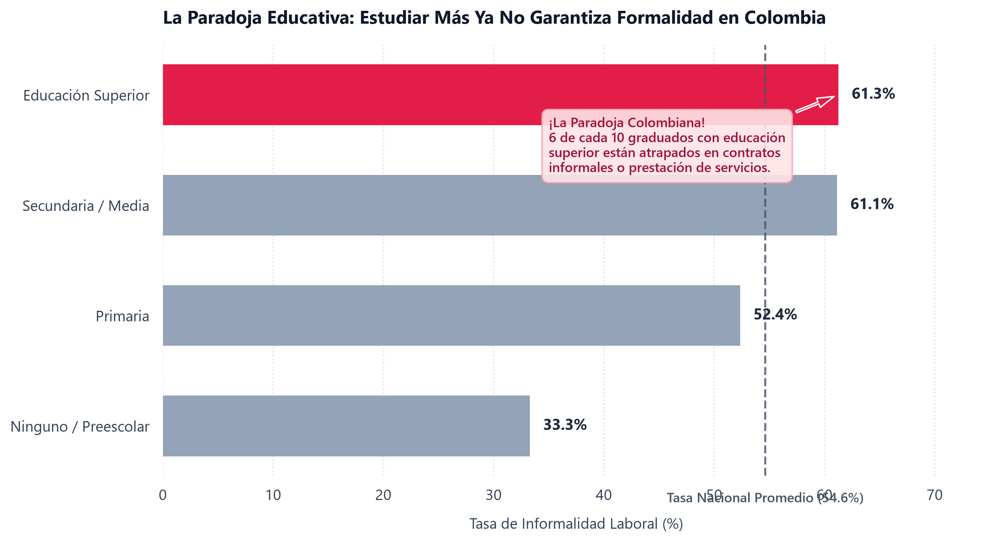

Evidencia en Python • Seaborn I
1. La Paradoja: A mayor estudio, la informalidad no desaparece
Históricamente se prometió que la educación superior era el pasaporte definitivo a un contrato laboral formal. La evidencia de la GEIH 2026 desmitifica esta creencia: la tasa de informalidad en personas con educación superior asciende al 61.27%, superando incluso a la secundaria y media técnica.

Fuente: DANE — GEIH 2026 (Semestre 1). Procesamiento en Python 3.
300 DPI • Títulos explicativos de hallazgo